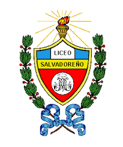

Educacion
- Universidad
- Bachillerato
- Educacion Basica
Ingeniería Informatica 2018- Actualmente en la Universidad Centroamericana “Jose Simeón Cañas” (UCA)
Bachillerato General 2014-2015 en el Colegio Liceo Salvadoreño
Séptimo Grado-Noveno Grado 2011-2013 en el Colegio Liceo Salvadoreño
Experiencia Laboral
Puesto:Teleoperador
Empresa:Pizza Hut
Periodo:Septiembre 2016-Mayo 2018
Experiencias adquiridas:
Brindar un buen servicio al cliente al momento de recibir sus llamadas.
Acostumbrado al logro de metas establecidas por la empresa.
Lograr la satisfacción del cliente al brindarle diferentes opciones para satisfacer sus necesidades.
Puesto:Analista de control de calidad El Salvador-Guatemala
Empresa:Pizza Hut
Periodo:Noviembre 2017-Diciembre 2017
Experiencias adquiridas:
Verificar a los proveedores en el cumplimiento de los lineamientos de la certificación FSC 22000.
Garantizar bajo nivel de riesgo sanitario en las diversas materias primas utilizadas en Pizza Hut y KFC.
Validación de la inocuidad brindada por parte de los diversos proveedores.
Puesto:Analista de Mantenimiento Centroamerica
Empresa:Pizza Hut
Periodo:Mayo 2018-Actualmente
Experiencias adquiridas:
Validar el nivel de satisfaccion por parte de las tiendas con respecto al personal de mantenimiento de la empresa.
Desarrollar aplicaciones web y de escritorio para el apoyo en la toma de decisiones a nivel gerencial.
Administrar bases de datos con un alto nivel de desarrollo y varias fuentes de informacion.